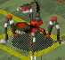
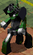

| 概要 | 情報 | Weapon一覧 |
| Magic一覧 | Device一覧 | Item一覧 |
| 攻略チャート | Warlocks 攻略へ |
| Stage10 ブラックボックス | |||
| 名前 | Lv. | 武器 | 人数 |
| ガーディア(赤) SCORPION  |
12 | なし | 2 |
| ガーディア(青) SCORPION |
15 | なし | 3 |
| ガーディア TOWER  |
22 | なし | 3 |
| TOWER型ガーディアが登場します。やつは耐久力も攻撃力も高いので注意が必要です。唯一の救いは自爆がないことですが、HP100%回復の能力があります。 また、ガーディア(青)もHP100%回復能力を発揮します。 |
|||
| 概要 | 情報 | Weapon一覧 |
| Magic一覧 | Device一覧 | Item一覧 |
| 攻略チャート | Warlocks 攻略へ |